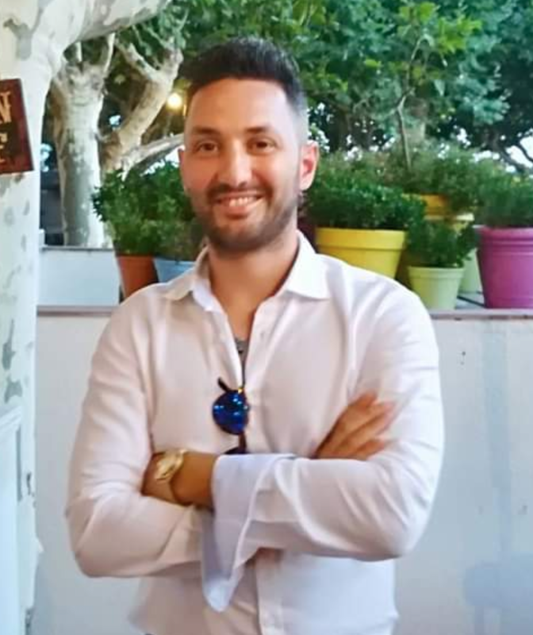

Nicola Giannotta
Junior Developer
About me
I am a civil engineer who has been working for the last 6 years in Uk building several iconic buildings such as Manchester Airport terminal 2 extension, The factory in Spinningfield and the Scalpel skyscraper in London.During my experience in construction I have come accross digital engineering and I started developing an interest to digital and data in general. Before becoming a Civil engineer I have worked in hospitality for almost 15 years basically covering almost every aspect of it, from front of house in catering to lifeguarding and personal training in beach resorts in Italy. I also worked as an eintertainer in a resort.
I have started coding using udemy accademy with a full stack developer course and then deepened my knowledge with a fast track bootcamp course in Manchester Code Accademy